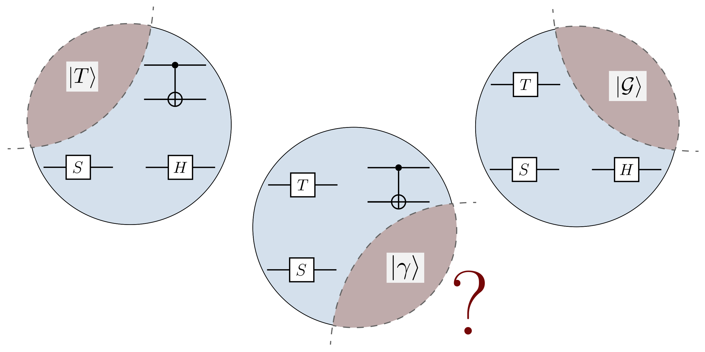
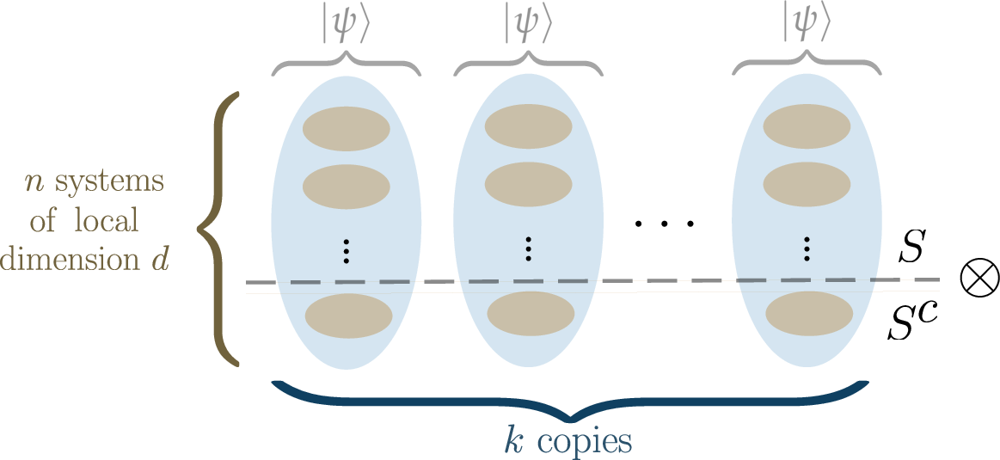
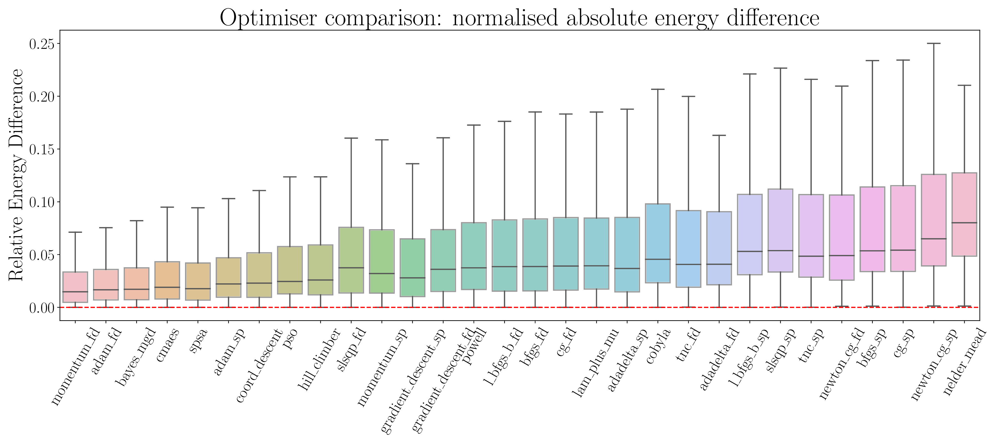
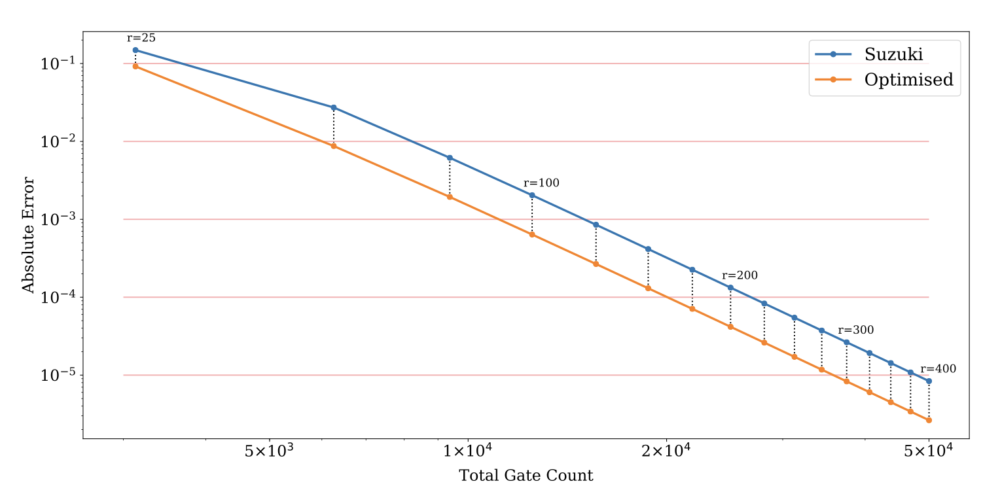
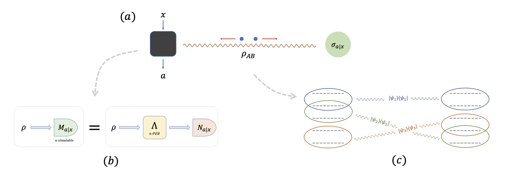
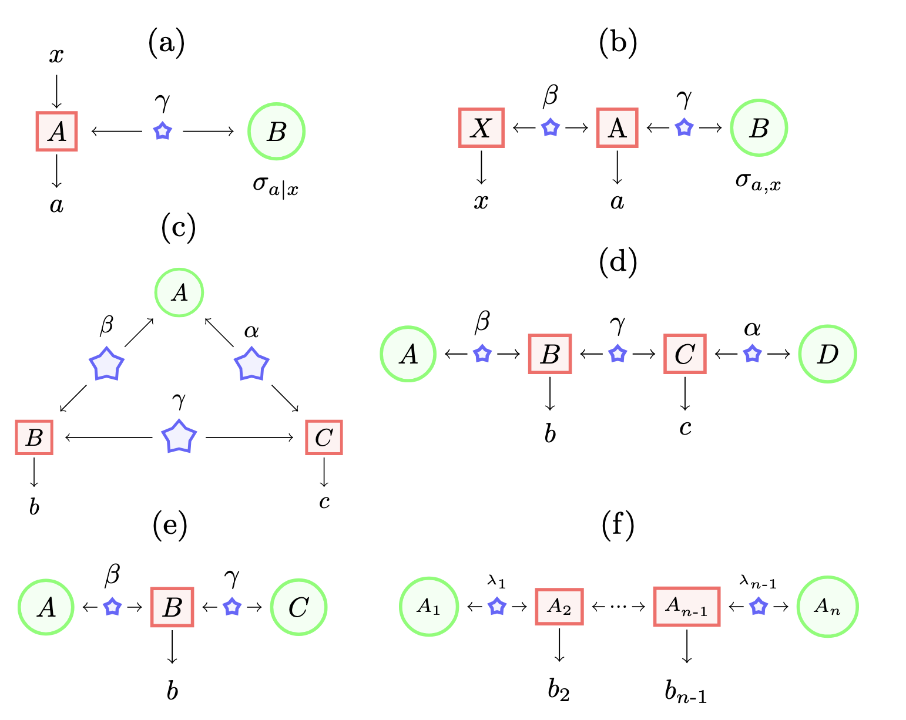

Research
All my papers can be found here, and my PhD thesis is here.
I am currently broadly interested in:
- Quantum Error Correction
- Quantum Algorithms
- Software Development
- Artificial Intelligence
Below are some topics and projects that I have worked on.
The Hadamard Gate in Quantum Computation
I undertook this project with my two PhD supervisors, Paul Skrzypczyk and Noah Linden, and our paper was recently published in Quantum.
Paper: The Hadamard gate cannot be replaced by a resource state in universal quantum computation, Quantum, 2024. Slides Talk

Property Testing of Entanglement
This work relates to the question: how many copies of a multipartite quantum state are needed to determine if the state is product across some bipartition? This work was in collaboration with Ashley Montanaro, and our paper is essentially a long mathematical proof. A preprint is available, and the manuscript is currently under review at journals.
Paper: Testing multipartite productness is easier than testing bipartite productness, arXiv, 2024.
Abstract
We prove a lower bound on the number of copies needed to test the property of a multipartite quantum state being product across some bipartition (i.e. not genuinely multipartite entangled), given the promise that the input state either has this property or is \(\epsilon\)-far in trace distance from any state with this property. We show that \(\Omega(n / \log n) \) copies are required (for fixed \(\epsilon \leq \frac{1}{2}\)), complementing a previous result that \(O(n / \epsilon^2)\) copies are sufficient. Our proof technique proceeds by considering uniformly random ensembles over such states, and showing that the trace distance between these ensembles becomes arbitrarily small for sufficiently large \(n\) unless the number of copies is at least \(\Omega (n / \log n)\). We discuss implications for testing graph states and computing the generalised geometric measure of entanglement.

Numerically Benchmarking Optimisers for Quantum Algorithms
I have worked on several projects connected to this topic over the years. Most recently, I interned at Phasecraft (a quantum computing startup, focused on near-term applications and software) in the summer of 2022, and remained as a consultant with the company until December 2024. I essentially worked on the question: which are the best optimisers to use in variational quantum algorithms? This work involved a great deal of coding in Python, and running large scale numerical experiments on high-performance clusters.
I also interned with Entropica Labs (a Singapore based quantum computing startup) in 2019, working on optimisation techniques for the quantum approximate optimisation algorithm.
Prior to this, I worked in the Computer Science department at the University of Sheffield, looking at optimisation techniques in quantum simulation (Trotter-Suzuki formulas).

Abstract
We numerically benchmark 30 optimisers on 372 instances of the variational quantum eigensolver for solving the Fermi-Hubbard system with the Hamiltonian variational ansatz. We rank the optimisers with respect to metrics such as final energy achieved and function calls needed to get within a certain tolerance level, and find that the best-performing optimisers are variants of gradient descent such as Momentum and ADAM (using finite difference), SPSA, CMAES, and BayesMGD. We perform gradient analysis, and observe that the step size for finite difference has a very significant impact. We also consider using simultaneous perturbation (inspired by SPSA) as a gradient subroutine: here finite difference can lead to a more precise estimate of the ground state but uses more calls, whereas simultaneous perturbation can converge quicker but may be less precise in the later stages. Finally, we study the quantum natural gradient algorithm: we implement this method for 1-dimensional Fermi-Hubbard systems, and find that whilst it can reach a lower energy with fewer iterations, this improvement is typically lost when taking total function calls into account. Our method involves performing careful hyperparameter sweeping on 4 instances. We present a variety of analysis and figures, detailed optimiser notes, and discuss future directions.Abstract
One of the most promising applications of near-term quantum computing is the simulation of quantum systems, a classically intractable task. Quantum simulation requires computationally ex- pensive matrix exponentiation; Trotter-Suzuki decomposition of this exponentiation enables efficient simulation to a desired accuracy on a quantum computer. We apply the Covariance Matrix Adap- tation Evolutionary Strategy (CMA-ES) algorithm to optimise the Trotter-Suzuki decompositions of a canonical quantum system, the Heisenberg Chain; we reduce simulation error by around 60%. We introduce this problem to the computational search community, show that an evolutionary op- timisation approach is robust across runs and problem instances, and find that optimisation results generalise to the simulation of larger systems.

High-dimensional Quantum Systems
Paper: Simulability of high-dimensional quantum measurements, PRL, 2022.
Abstract
We investigate the compression of quantum information with respect to a given set $\mathcal{M}$ of high-dimensional measurements. This leads to a notion of simulability, where we demand that the statistics obtained from $\mathcal{M}$ and an arbitrary quantum state $\rho$ are recovered exactly by first compressing $\rho$ into a lower dimensional space, followed by some quantum measurements. A full quantum compression is possible, i.e., leaving only classical information, if and only if the set $\mathcal{M}$ is jointly measurable. Our notion of simulability can thus be seen as a quantification of measurement incompatibility in terms of dimension. After defining these concepts, we provide an illustrative examples involving mutually unbiased basis, and develop a method based on semi-definite programming for constructing simulation models. In turn we analytically construct optimal simulation models for all projective measurements subjected to white noise or losses. Finally, we discuss how our approach connects with other concepts introduced in the context of quantum channels and quantum correlations.

Abstract
The effect of quantum steering arises from the judicious combination of an entangled state with a set of incompatible measurements. Recently, it was shown that this form of quantum correlations can be quantified in terms of a dimension, leading to the notion of genuine high-dimensional steering. While this naturally connects to the dimensionality of entanglement (Schmidt number), we show that this effect also directly connects to a notion of dimension for measurement incompatibility. More generally, we present a general connection between the concepts of steering and measurement incompatibility, when quantified in terms of dimension. From this connection, we propose a novel twist on the problem of simulating quantum correlations. Specifically, we show how the correlations of certain high-dimensional entangled states can be exactly recovered using only shared random- ness and lower-dimensional entanglement. Finally, we derive criteria for testing the dimension of measurement incompatibility, and discuss the extension of these ideas to quantum channels.Paper: Certifying high-dimensional quantum channels, arXiv, 2024.
Abstract
The use of high-dimensional systems for quantum communication opens interesting perspectives, such as increased information capacity and noise resilience. In this context, it is crucial to certify thatagivenquantumchannelcanreliablytransmithigh-dimensionalquantuminformation. Herewe develop efficient methods for the characterization of high-dimensional quantum channels. We first present a notion of dimensionality of quantum channels, and develop efficient certification methods for this quantity. We consider a simple prepare-and-measure setup, and provide witnesses for both a fully and a partially trusted scenario. In turn we apply these methods to a photonic experiment and certify dimensionalities up to 59 for a commercial graded-index multi-mode optical fiber. Moreover, we present extensive numerical simulations of the experiment, providing an accurate noise model for the fiber and exploring the potential of more sophisticated witnesses. Our work demonstrates the efficient characterization of high-dimensional quantum channels, a key ingredient for future quantum communication technologies.
Quantum Steering in Networks
Paper: Network Quantum Steering, PRL, 2021.
